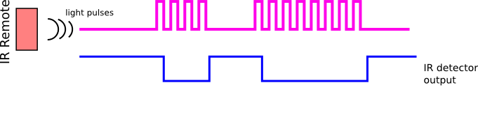

IRPi - the Universal IR Remote
This is a description for the first slide.
What is IRPi?
IRPi is a universal IoT IR remote based on Raspberry Pi. It allows you to control any IR-based device such as TVs, set-top boxes and air conditioners. IRPi controls mulitple devices from the cloud using a simple and intuitive interface.
Demo
Youtube Video
Features
- Record and Transmit any IR signal
- Control your device through a mobile-friendly website
- Manage multiple Raspberry Pi's from the cloud
- Set timers for future remote commands
- Access manually through easy HTTP Requests
Putting the IR in IRPi
IR (Infra red) is a light wave with a longer wavelength than red light - this makes it invisible to the human eye. Since many day-to-day objects emmit IR signal naturally, IR remotes/receivers don't simply emmit and record IR; they use a unique protocol. Only when the transmitter modulates IR at a 38Khz frequency, the receiver detects a 'low' signal. This can be explained simply by the following diagram.
In order to read and transmit IR codes, we used the GPIO library provided by microsoft. It allows to read and write to the GPIO pins on the RPi.
Since we worked with Windows 10, which is not a real time operating system, this part was quite challenging. As explained earlier, to recive and transmit IR codes there is a need to change from high to low voltage in a 38kHz frequency. Altough the RPi is fast enough, the operation system often stops the code in order to maintain itself. Therefore our naive attempts to obtain an accurate and reliable 38kHz rate failed and we had to find smarter solutions.
For reading signals, the IR reciver outputs 'high' or 'low' voltage based on the IR frequency as showen in the last diagram. We used the GPIOChangeReader class provided by microsoft. It places timestamps in kernal mode to record fast changes in the IR receiver signal, which we can later read from the device in user mode.
Transmitting was a bigger challenge for us. For that purpuse we used a '555 timer' connected to the IR LED on our breadboard. The '555 timer' modulates a 38kHz frequency, and we use the GPIO to enable or disable the timer. The output of the timer is connected to the IR LED.
Building the IRPi
The universal remote is built from the following- a Raspberry Pi 3, an IR receiver and an IR transmitter (LED). The IR LED is connected to a 555 timer that modulates a 38kHz frequency. It also contains a green LED for debugging and a pushbutton to accept input. The following diagram shows the wiring of the IRPi:

Communication with the cloud
Our project's communcation is done through several cloud services provideed by Microsoft Azure. The main parts are:
- Azure App Service - Web App
- Cloud Storage - Azure Storage Table
- Azure Functions
- IoT Hub
The following diagram explains the interactions between these services:
IoT Hub
Bla
Web App
Bla
Azure Functions
Bla
Azure cloud Table
Bla
Communication examples
Trasnmit
When a user clicks on a transmit button
The following diagram explains what happens when a user clicks on a transmit button:
- A GET request is sent to the Web app sufficient info to know which IR message the user clicked on.
- The Web app asks the Storage Table for the appropriate IR message in the IRRecordingTable with the information from the GET request.
- The Storage Table retrievs the IR message and sents is back to the Web app.
- The Web app invokes a direct method which tells the IoT Hub which device should transmit and what message.
- The IoT then communcates with the chosen divice and the actual IR message with then be transmited by the divice.
Record
Bla
Schedule
Bla
Source & Documentation
Link to GitHub
API
IR (Infra red) is a light wave with a longer wavelength than red light - this makes it invisible to the human eye. Since many day-to-day objects emmit IR signal naturally, IR remotes/receivers don't simply emmit and record IR; they use a unique protocol. Only when the transmitter modulates IR at a 38Khz frequency, the receiver detects a 'low' signal. This can be explained simply by the following diagram.
In order to read and transmit IR codes, we used the GPIO library provided by microsoft. It allows to read and write to the GPIO pins on the RPi.
Since we worked with Windows 10, which is not a real time operating system, this part was quite challenging. As explained earlier, to recive and transmit IR codes there is a need to change from high to low voltage in a 38kHz frequency. Altough the RPi is fast enough, the operation system often stops the code in order to maintain itself. Therefore our naive attempts to obtain an accurate and reliable 38kHz rate failed and we had to find smarter solutions.
For reading signals, the IR reciver outputs 'high' or 'low' voltage based on the IR frequency as showen in the last diagram. We used the GPIOChangeReader class provided by microsoft. It places timestamps in kernal mode to record fast changes in the IR receiver signal, which we can later read from the device in user mode.
Transmitting was a bigger challenge for us. For that purpuse we used a '555 timer' connected to the IR LED on our breadboard. The '555 timer' modulates a 38kHz frequency, and we use the GPIO to enable or disable the timer. The output of the timer is connected to the IR LED.
IRPi
The Universal IoT IR Remote

Omer Kafri

Amit Atsmon